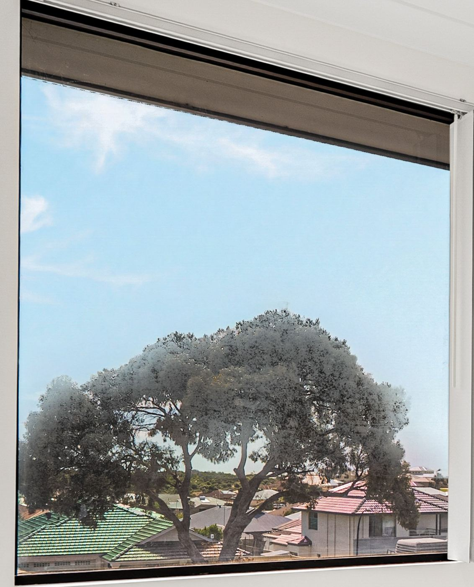
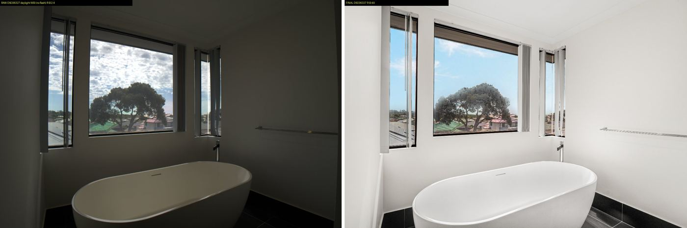
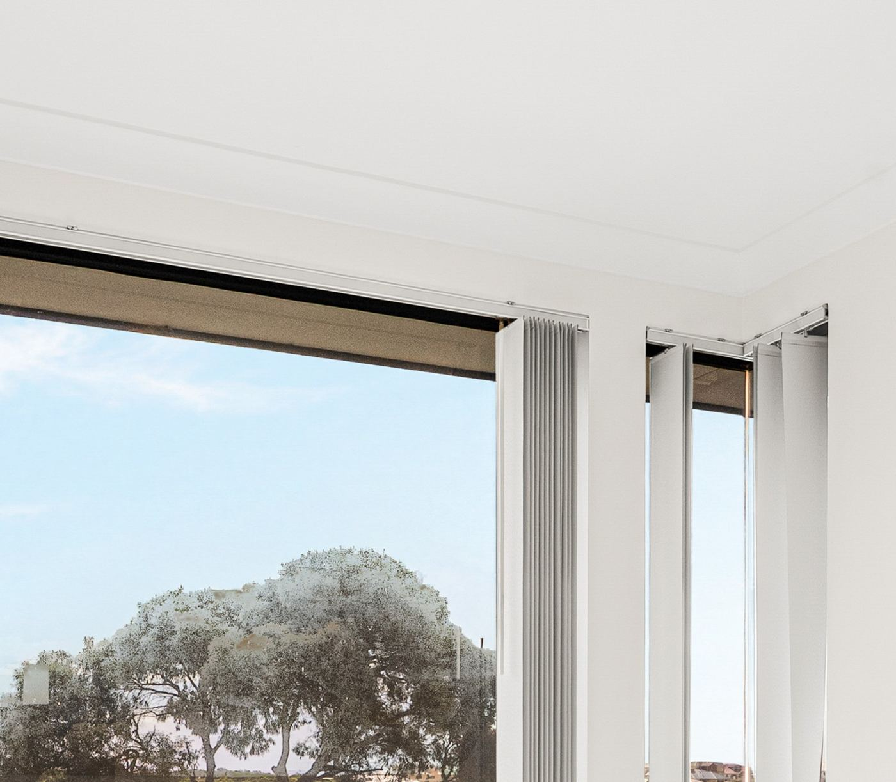
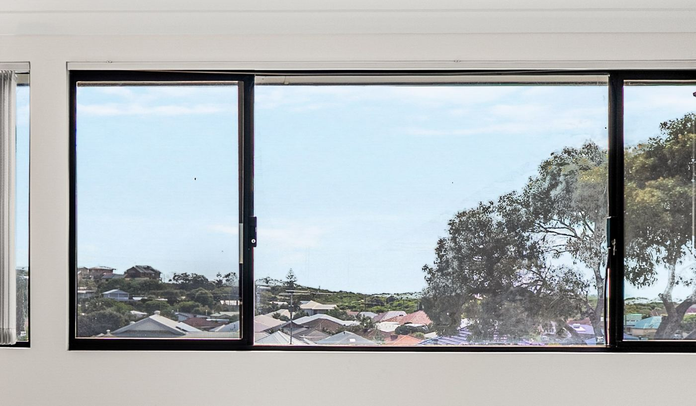
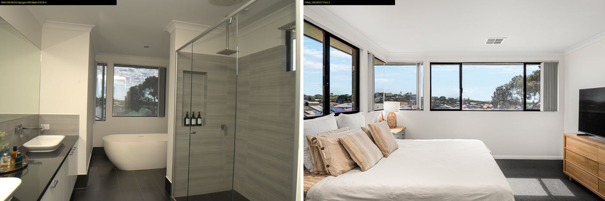

1 job(s) · 3 item(s) · Baker Production QC
DSC06327Redo the sky mask around the tree in the window
The sky replacement has eaten into the tree: the canopy edge is pale and blotchy with sky showing through the leaves. Mask the tree properly (or keep the raw sky) so the leaves stay solid and natural.


DSC06332Fix the white patches and fringe on the tree
Same bathroom window as DSC06327: blocky white patches left of the tree and a pale fringe around the canopy from the sky swap. Re-mask the tree so it matches the raw.

DSC06337Clean up the tree edges in the bedroom window
The gum tree on the right of the window has the same pale, chewed-up edge from the sky replacement. Re-mask the tree edges so the leaves look natural.


Done well: true-to-raw white walls (no cream); deep blacks on the tiles and benchtops; pale soft blue skies on the exteriors; clear window views in the living areas